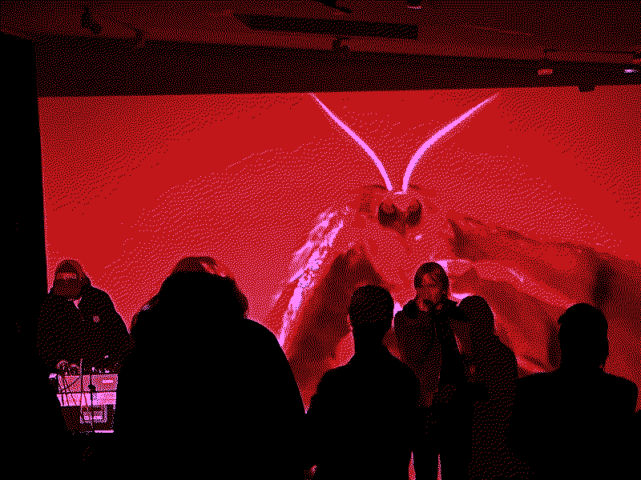

230315
It's a little strange writing a first blog post for the site before it even launches. However, I figured a show about me on the radio would be a perfect first post, but the episode aired yesterday on the Icelandic national radio, RÁS 1.
The interview is in Icelandic but it's basically about my collaborations, AGALMA, Spectral Assault amongst other things and features a lot of music from my different projects. The episode is the first in a new series by Icelandic music writer Árni Matthíasson, and it's an honor being the first guest.
You can listen to the whole thing here
--
The last couple of weeks have also been exciting in Reykjavík with a lot of great
concerts happening lately. Final Boss Type Zero played 2 shows, one in Mengi (pictured below) and one in Húrra (as a warm-up band for the release concert of Kvikyndi), and Pellegrina did a great set in Ásmundasalur; Post-dreifing and Mengi have also hosted some great events lately.
